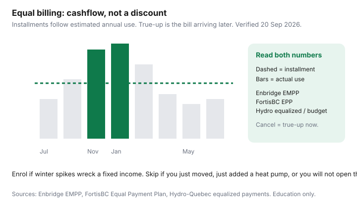

Utilities · Canada
Equal billing for Canadian utilities: when it helps cashflow — and when it hides a problem
Canadians treat equal billing as a “hydro discount” and then get a reconciliation bill that feels like a scam. It is not a scam and it is not a sale. The utility estimated a year of use, divided by 12, and charged you that installment. Winter still happened. If the estimate was low — new baby, colder HDD, a dead filter, a QRAM step-up — the true-up is the bill arriving later.
This is cross-utility literacy for Enbridge EMPP, FortisBC EPP, and hydro equalized / budget plans. It is not a rate-plan chooser. For Ontario clocks use the OEB calculator. For a January gas shock use Enbridge bill anatomy.
Disclosure: Home energy monitors are an offer type that can help you see usage while the debit is flat. Saving Optimizer may earn a commission if we later add partner links. We do not currently claim monitor-brand or utility partnerships. This is education, not enrolment advice.
Key takeaways
- Utilities estimate annual use from history (or a neighbourhood average if you are new), apply current rates, sometimes layer weather, and divide into monthly installments.
- A true-up is a credit, a balance owing, or a rollover into next year. Read that line before you cancel in a rage.
- Equal billing ≠ conservation. You can waste gas at a comfortable $180/month until August explains it.
- Names differ: Enbridge EMPP, FortisBC Equal Payment Plan (gas reviewed quarterly; electricity at 12 months), Hydro-Québec equalized / instalment style, plus LDC “budget billing.”
- Enrol if winter spikes wreck a fixed income and you will still open the usage graph. Skip if you just moved, just changed equipment, or you treat the flat debit as “the bill is fine.”
How utilities estimate annual use and set monthly installments
The idea is the same even when the acronym changes.
- Pull 12 months of billed use at the address — or a regional average if you just opened the account.
- Multiply by the rates they expect (commodity + the delivery they already know).
- Sometimes blend in weather normals so a polar-vortex year does not set the next installment forever.
- Divide by 12 (or review every quarter and nudge).
- Print the installment plus any “other charges” that sit outside the plan.
Enbridge EMPP (used 20 Sep 2026) is explicit: history + current rates + weather reports; the monthly bill is the installment plus Other Enbridge Charges; they review periodically. FortisBC EPP: 12 equal payments from last year’s use at the address; gas is reviewed every three months and can move with weather, use, and rates; electricity is reviewed after 12 months and the difference is baked into the next installment; both re-enrol for the next year. New FortisBC customers get history at the address or a regional average.
If last year’s occupant kept the house at 24°C, you inherited their installment. If you added a heat pump, last year’s gas history is the wrong denominator.

True-up surprises: credit vs balance owing at plan end
Over a year, installments are applied against actual charges.
- Credit — you overpaid. Mild winter, you went to Florida, you insulated. Ask how they refund or apply it.
- Balance owing — you underpaid. Cold winter, a rate increase, a new EV, a teenager. That amount is due or rolled.
- Rollover — Enbridge says differences that exceed an average monthly bill can roll into the next EMPP year. That is how a “small” miss becomes next year’s higher installment.
Cancelling mid-winter can crystallize the owing now. Read the plan balance on the bill before you toggle My Account. A review (new installment) is often smarter than a cancel if the estimate is stale but you still want cashflow smoothing.
Equal billing vs conservation: they are not the same lever
Conservation is fewer m³ and kWh: envelope, setpoint, zoning, a machine that is not dying. Equal billing is a payment shape. You can do both. You can do neither. You cannot substitute one for the other.
The failure mode is comfort: the debit is $165 every month, so nobody looks at the 3,400 kWh January on Hydro-Québec Rate D or the 450 m³ February on Enbridge. August then feels like a penalty. It is arithmetic.
Enbridge EMPP, FortisBC EPP, and hydro utility variants
| Plan | How the installment is built | Watch-out |
|---|---|---|
| Enbridge EMPP (Ontario gas) | History + rates + weather; periodic review | Other charges sit outside; rollover of large differences; cancel can dump winter owing |
| FortisBC EPP (gas) | Last year’s use ÷ 12; reviewed every 3 months | True-up charge or credit at year end; then re-enrol at the new amount |
| FortisBC EPP (electric) | Reviewed after 12 months; difference spread into the next installment | A silent year of Step 2 heat becomes next year’s “equal” number |
| Hydro-Québec equalized / instalments | Spreads winter into summer so the Visa does not spike | Rate D second-tier Januaries disappear from the debit until you open usage |
| LDC budget billing (Ontario hydro, others) | Similar estimate-and-divide; names vary by utility | Plan choice (TOU/ULO/Tiered) is a different lever — budget billing does not elect a clock |
BC Hydro’s residential conversation is the tiered / flat / time-of-day menu. If you also use a BC Hydro equal-payment product, treat it as cashflow on top of that menu — not as Step 1 forever.
Who should enrol (fixed income, winter spike anxiety) vs who should not
Enrol if a $400 January and a $70 July wreck the same chequing account, you will still open the usage graph, and the address has a stable occupant and machine. Golden Age / aligned due dates (Enbridge) can stack with EMPP for seniors who time a CPP deposit.
Skip or wait if you just moved, just added a heat pump or an EV, you are listing the house, you are a landlord with rotating tenants, or you will treat the flat debit as permission to stop looking. A wrong estimate is a scheduled surprise.
If you cannot pay even the installment, that is an arrears conversation — Enbridge arrangements, LEAP, your LDC’s low-income rules — not a reason to rage-cancel and hope. See the Enbridge assistance section.
Monitoring usage while on equal billing so spikes do not compound
- Every quarter, open the portal and write kWh or m³ for the last three months. Ignore the debit for this exercise.
- Compare January to last January. Direction matters more than a degree-day dissertation.
- If use jumped, pick a lever: filter, setpoint, envelope, a machine visit — not “the plan is broken.”
- If use dropped (you insulated, you left for eight weeks), ask for an installment review so you do not lend the utility money all summer.
- An energy monitor or Green Button export is a useful cross-check for the next month. It does not replace the meter the true-up will use.
Equal billing is a grown-up cashflow tool. It is a terrible conservation report. Use it like a mortgage payment: known debit, separate eye on the thing you actually bought.
Sources & date stamps
- Enbridge Gas Ontario, Equal Monthly Payment Plan — calculation, reviews, rollover, cancel caution (used 20 Sep 2026).
- FortisBC, Equal Payment Plan — eligibility; gas quarterly review; electricity 12-month review; year-end true-up; re-enrolment.
- Hydro-Québec, customer-space / Energy Wise context — equalized payments hide winter kWh until you read usage.
- OEB customer-service / LEAP pages — arrears are a different tool than budget billing.
Frequently asked questions
Is equal billing cheaper than paying as I go?
No. Over a full year you should land near the same dollars plus or minus a true-up. You are buying a flatter Visa debit, not a ¢ discount.
What is a true-up?
The reconciliation between installments and actual charges. You may get a credit, a bill for the shortfall, or a rollover into next year’s plan (Enbridge can roll amounts above an average month).
Should I enrol if I just moved or just added a heat pump?
Usually wait. The estimate will use the previous occupant’s heat or last year’s machine. A wrong installment becomes a nasty true-up.
Does cancelling dump a huge bill on me?
It can. Read the plan balance first. Cancelling in January can put winter actuals and any owing on the next bill. Ask for a review if the installment is stale.
How do I watch usage while the debit is flat?
Open the portal graph (kWh or m³) every quarter. Compare this January to last January. An energy monitor helps the next month; it does not replace the utility’s meter.